Having seen and experienced planning and delivering a formal presentation using PowerPoint, students will learn to add media (photos, etc) to their presentations – and why they would do so.
On completion of this lesson, students will:
Last time, you practiced presenting to the rest of the class using PowerPoint to support you, and did a great job. We’ll do a lot more presenting in future classes, but before we get to that, let’s talk about some features in PowerPoint that can make your presentations a lot more exciting and attractive.
When we talk about PowerPoint, we describe it as “presentation software,” but that’s really a short description for it. A longer way to describe PowerPoint is as “multimedia presentation software.” We’ve already discussed what a presentation is, and you know about software – but what’s multimedia?
Prompt class for answers; they may already know! Otherwise…
Multimedia comes from two words: multi- and media. Let’s take this apart. Can you think of other words in English that start with multi-?
Examples:
Multiple (like “multiple choice”)
Multicultural
Multimillionaire
Multiplication (“to make many”)
What’s in common here? In every case, multi- means “many.” Something that is “multicultural” is made from many cultures. A “multimillionaire” is so rich he has many millions. And when you multiply something, you make it many.
Now, what about media? That’s a little more complicated.
Media is the plural form of “medium,” which can mean many things. Here, we’re using “medium” to mean “a way or method.” For example, if you are reading about science, you are learning using a book; the “medium” is text. If you tell a friend when the next football match is happening, you’re communicating using the “medium” of speech.
So if “medium” is “a way or method,” then media is “ways or methods.”
This is a complicated concept, so spend some time on understanding.
Let’s put it together: multi- is “many” and media is “ways or methods.”
So: Multimedia means “many ways or methods.”
Now that we know what multimedia means, what is a multimedia presentation?
Let the students try to work this out. If necessary:
A multimedia presentation is a presentation using many ways or methods. Some of these ways or methods – media – include text, speech, music, effects, pictures, and video. PowerPoint is “multimedia presentation software” because it lets you built presentations using many different kinds of media.
Or: Why Do We Care?
PowerPoint is a tool for creating multimedia presentations – presentations that can show information in many different ways, like speech, text, video, and pictures. Why would you want to do that?
(Let the class come up with ideas first)
Different people think and learn in different ways. Some people learn and understand better when they hear things, others when they read them, and others when they see them.
By using a multimedia approach to presenting, you can make sure everyone has something they’ll understand.
Also, using many different kinds of media – changing between speech and text and graphics – keeps your audience interested and not bored.
Today, we’ll discuss adding graphics – that is, pictures – to your presentation. There’s a few different ways to put graphics in your presentation: using Clip Art, adding from a file, and using a background image or design.
Let’s say that you have PowerPoint open and have created a slide, but it’s not very interesting. You want to make the slide more interesting with a graphic because all there is now is black text on a white background.
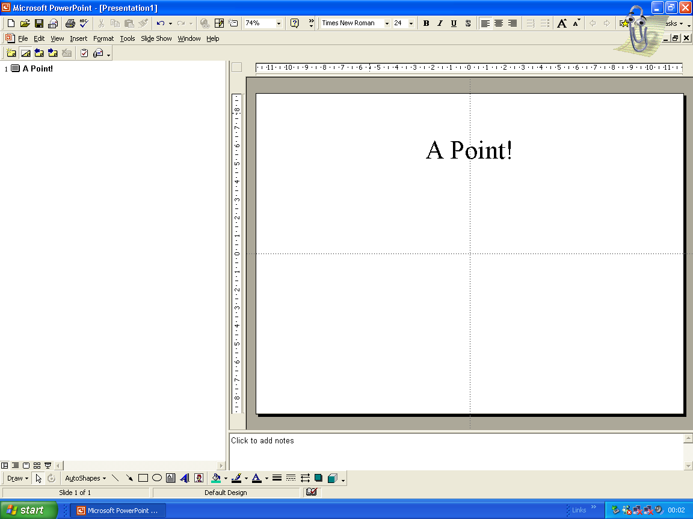
The simplest way to add a graphic or image is using Clip Art. To do that, click on the Insert menu tab, then bring the mouse to Picture -> Clip Art.
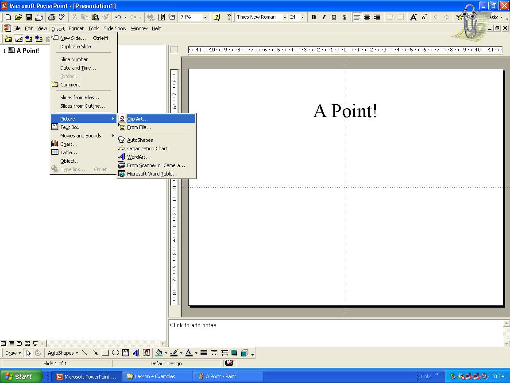
This will open a window showing many different kinds of pictures. Search around using the mouse to find one you like, or search using the “search for clips” field.
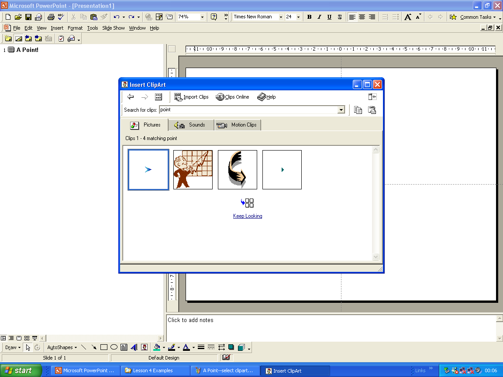
When you’re done, double-click on the image you like. Now you’ve got an image on your slide – much more interesting, isn’t it?
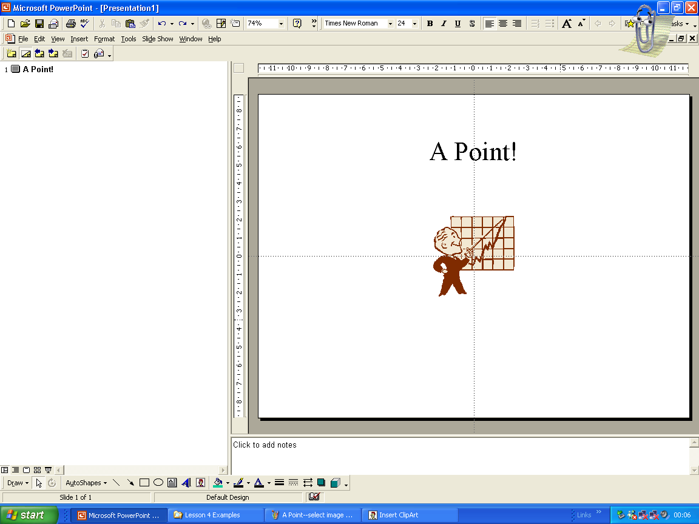
But the picture here is very small, and there’s lots of extra space on the slide. Let’s resize the picture to be bigger. To do that, first, click once on the picture so that small squares appear at its corners.
Then, take the mouse and put the tip of the pointer right in one of the squares, then click and hold down the left mouse button. While you’re holding the button, drag the mouse to move the square shape out, making the box bigger.
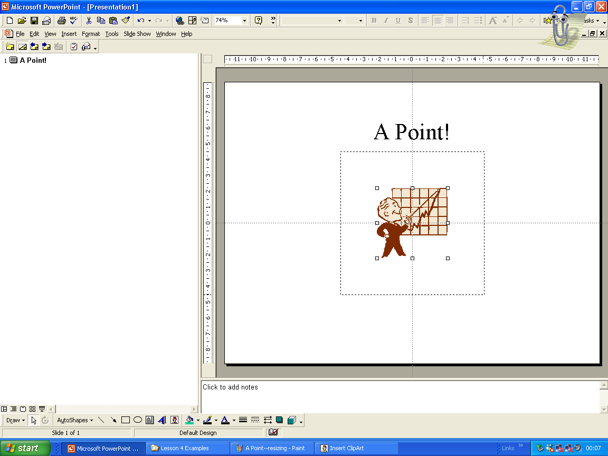
When the box is the size you want your picture to be, let go of the mouse button, and it will resize. If you need to, you can also click in the middle of the image and drag it around to move it on the slide.
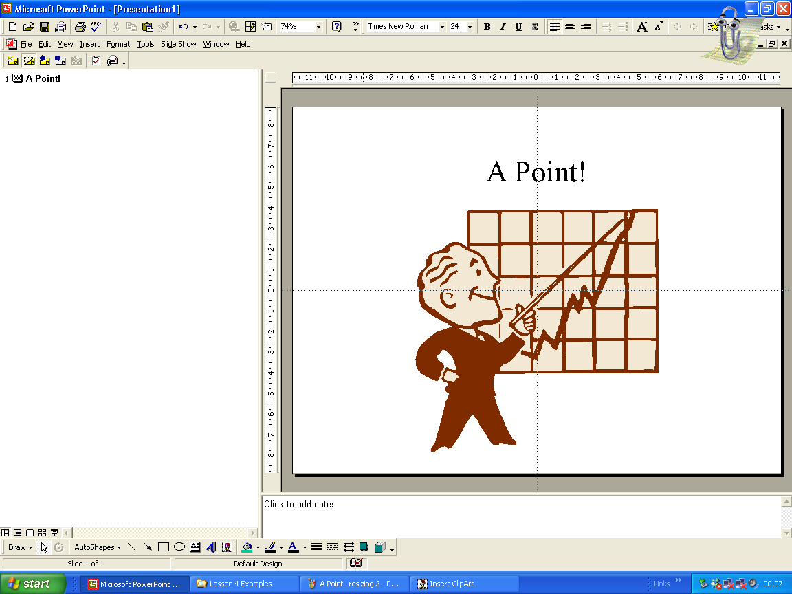
You can also add pictures and graphics from anywhere else on the computer. This can be especially useful if you have a digital camera or access to the Internet, either of which would allow you to create or find pictures with meanings very close to what you’re presenting about.
To add a picture or graphic from outside of Clip Art, use the mouse to select Insert… from the menu bar, drag down to Picture→, then click From File….
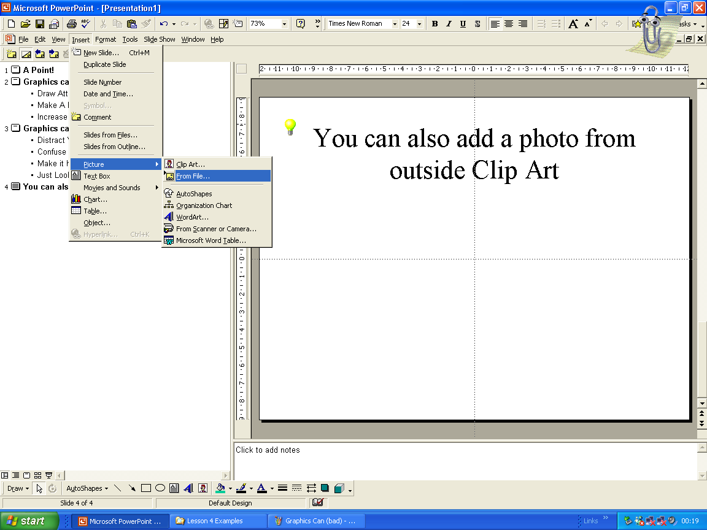
Then, use the Insert Picture window that appears to locate the picture you want to add. For our example, I’ve found a picture in the My Documents/My Pictures folder. If you’re familiar with where Windows stores pictures, or if you have your own source, you could of course add a picture from there.
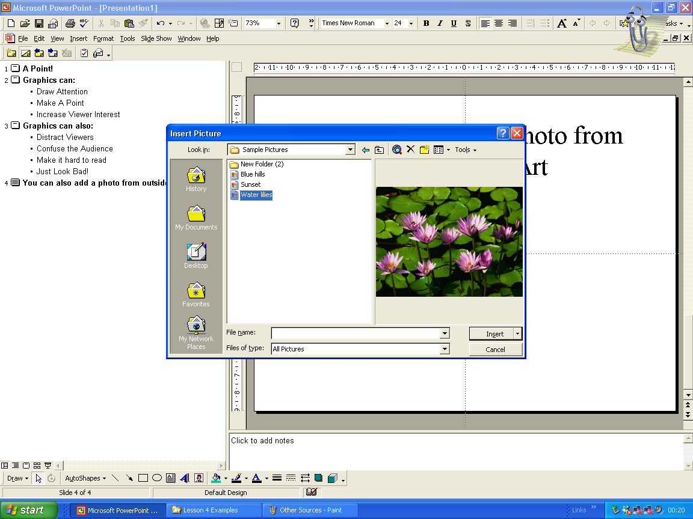
Finally, click the Insert button, and your picture will appear as part of your slide.
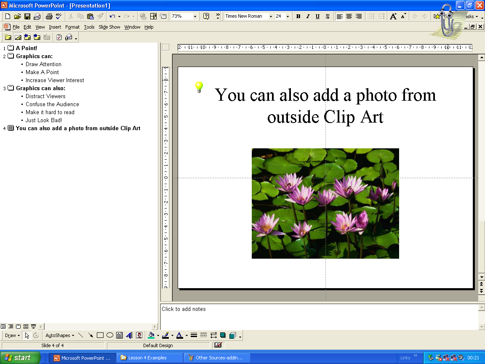
If you’d like, you can resize or move the picture in the same way we did with the Clip Art.
In addition to pictures or graphics that take part of your slide, you can also add a Background or Design Template that changes the look of your entire slide. This can be a very fast way to try a new look or feel for your slides, because it is added to all of them at once.
In order to add just a background, go back to the Insert tab on the menu bar, then select Background….
![Background][]
We won’t go over this in great detail.
To add a Design Template, use the mouse to access the Insert menu, then click Apply Design Template….
![Apply Design Template][]
This will present you with a list of example Design Templates. Click on each one to preview how your slides will look.
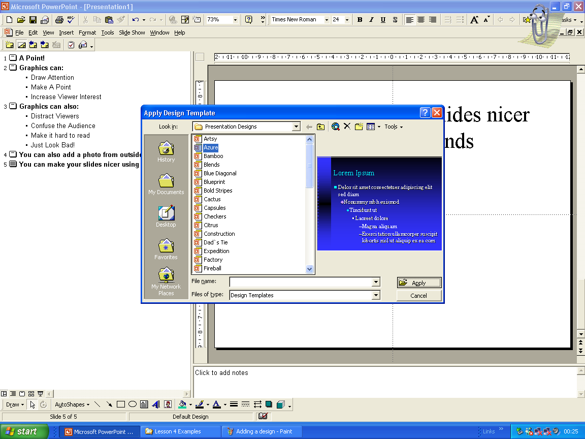
When you’ve found a design you like, either double-click on its name, or select it and click on Insert. Either way, it will be applied to all of your slides at once.
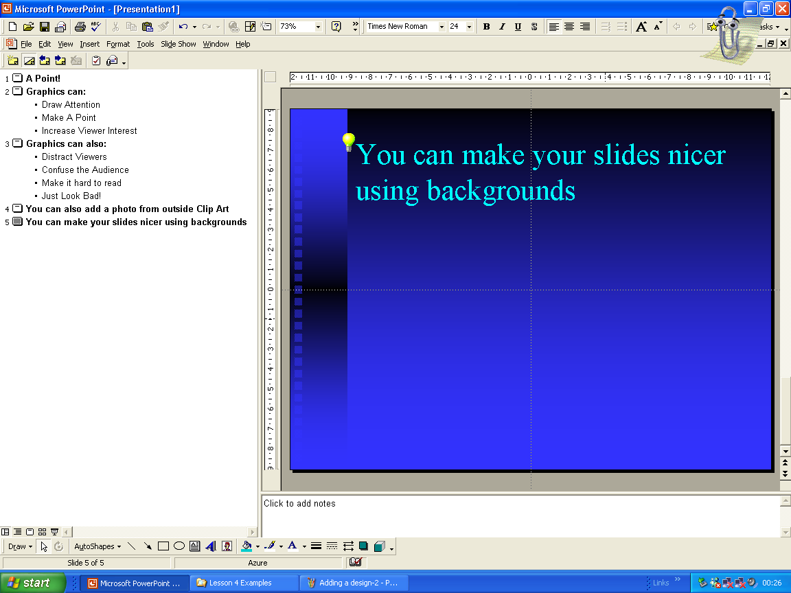
Using graphics and pictures can be good for your presentation, but they can also make it worse if you use them in a way that is distracting or confusing. Let’s look at some examples.
When used well, a picture or graphic is simple, draws attention to what you’re trying to say, increases the audience’s interest, and does not confuse or distract the audience.
When used poorly, though, pictures or graphics can ruin a slide. If there are too many images, or if they are not related to what you’re saying, or if they cover your text or otherwise make it difficult to read, then pictures can do more harm than good.
So be careful!
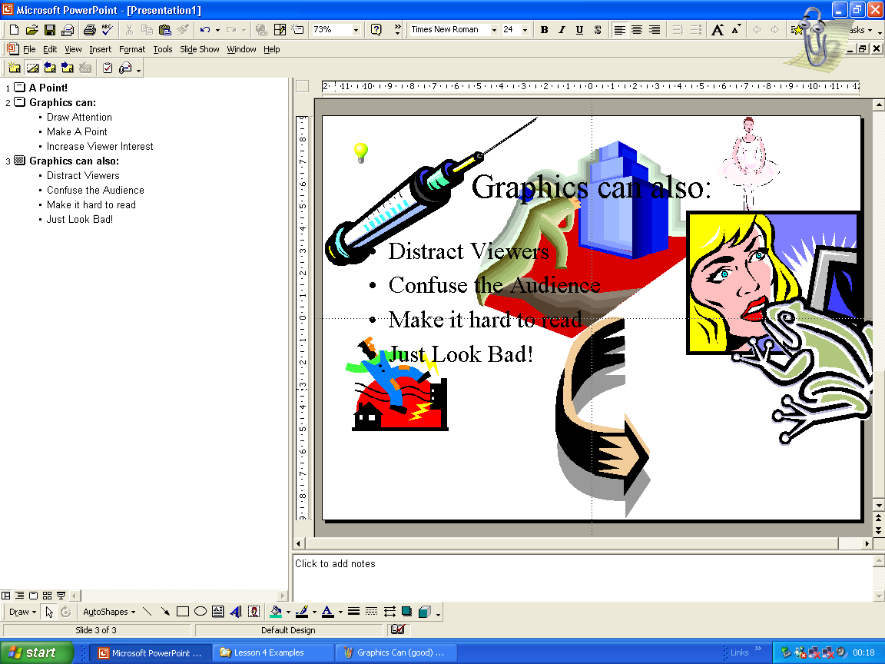
The same applies for Design Templates, by the way: while they often add color and interest to your slide, it’s very easy to make them distracting, which makes them a problem.
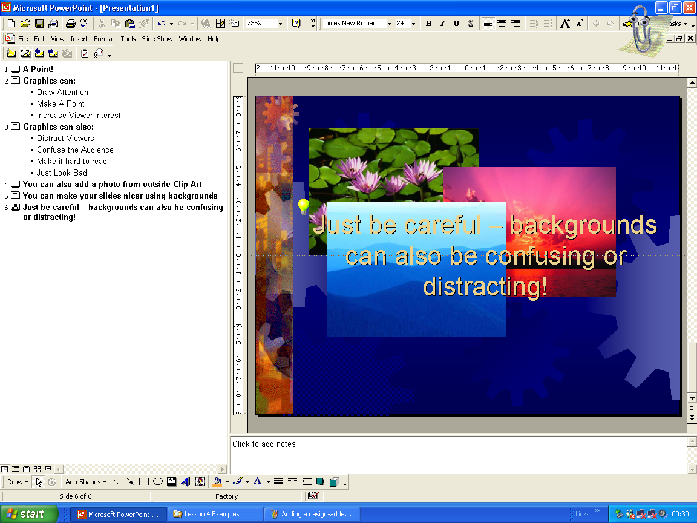
Depending on time constraints, this may be split out into an additional lesson/lab period and combined with presenting.
Now that we’ve discussed how to add graphics, pictures, backgrounds, and designs to our presentations, it’s time for all of you to add graphics and pictures to your own presentations! You can either use the presentation files you’ve been working with in class up to now, or create a new one if you’re more comfortable with that.
Note that this is one of the last times we’ll let students use this initial presentation; it’s getting a little tired. Next class we’ll add Transitions, the class following students will present, and then we start fresh with new presentation files.
There will not be enough time in this lesson for students to present, so metered assessment will wait for a future lesson. In the meantime, one-on-one instruction while students are working on the Practical aspect of the lesson can help the instructor ascertain the student body’s general understanding.
PowerPoint is a powerful program that lets you use many different ways – that is, multimedia – to present your ideas. Graphics, pictures, and design templates are all great ways to grab your audience’s interest and make your points more clear.
As this lecture concludes with a lab portion, extension work should not be necessary.